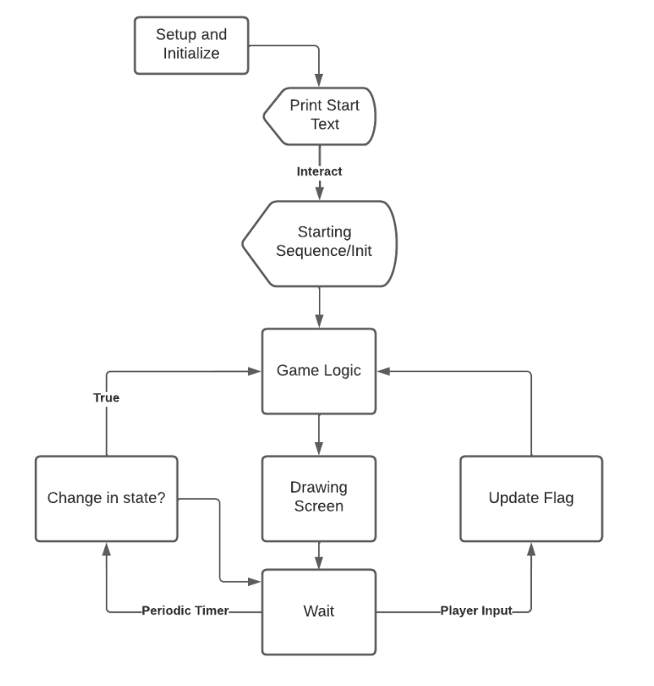

Program Design
Graphics/Plotting on VGA
The main constraint with the project was the combination of limited RAM and an enjoyable playing experience. Any asset or level design needed to be coded in flash, but also needed to be written to the VGA screen with minimal RAM or computation. These asset and level designs needed to be detailed to replicate the original NES game, which meant each tile would be 16 x 16 blocks, and each level would contain 16 x 11 tiles. To make the game more visually appealing, each block would be 2 x 2 pixels on the VGA screen.
The framework of the VGA driver developed by V. Hunter Adams and Bruce Land was used as a starting point. The driver interacted with the VGA outputs through a PIO configured on the Pico to send data at the frequency required for the VGA screen, and a DMA was responsible for transferring the correct data to the screen. The data was encoded in an byte array of 320 x 240, where every 4 bits represented the color of a single pixel on the screen, with the index being the position on the screen. This effectively created an array where every 4 bits corresponded to the color of a pixel on the screen. The array was one dimensional which meant the index was represented by x_pos + 480 * y_pos. This meant it was easy to access contiguous pixel columns, but moving rows required a jump in the array.
Writing to the VGA screen one pixel at a time would be far too slow, and the
delays and stutters of the background would be significantly more noticeable which meant multiple pixels needed to
be changed at a time. This required usage of pointer arithmetic and memcpy() such that memory can be
moved without having to be copied to RAM. The designs for each tile were stored in flash as hex values, doubled
across each column but computationally duplicated across two rows to create a 2 x 2 block. Memory transfers were
limited to 32 bits due to the bus of the Pico, but encoding the design as type long long allowed for
the designer to more easily adjust the design of the tile. Each tile is a two dimensional long long
array of size 2 x 16. Since a long long is 64 bits, it encoded for 16 pixels, but since a tile is 32
pixels across, each row needed to span across two indices. A pointer would traverse the array, copying memory
appropriately to where they are supposed to appear on the screen. (For more information, see Visual Design).
To write the main character, enemies, and entities that sit “on top” of the background, there needs to be a
consideration for “transparent blocks”. Since the designs need to be hard coded, there is no way to hardcode
transparency since every hex value corresponds to a color, and even if a value were to be assigned, the computation
of looking for that value defeats the purpose of using memcpy() for speed. The alternative was to use a
“mask” for every transparent design that specified which blocks were “transparent”. This mask would be compared
against the existing tile through a bit-wise OR, and inverted to compare against the design to determine which bits
needed to be from the background and which from the design, and memcpy() the modified design onto the
VGA screen.
void drawTop(x, y, *des, *mask)
int start_pos = 640 * y + x
long long copied_original
for (int i = 0; i < 16; i++) // Repeat for every row
// to draw the two sides of the row
for (int r = 0; r < 2; r++) // Repeat to complete row
// Duplicate mask into hex value equivalet
long long full_mask = *mask;
full_mask = (full_mask | (full_mask << 28))
full_mask = (full_mask | (full_mask << 14)) & 0x3000300030003;
full_mask = (full_mask | (full_mask << 7)) & 0x101010101010101;
full_mask = (full_mask << 8) - full_mask;
// Overlay mask over what's currently on the screen
memcpy(&copied_original, &vga_data_array[(start_pos + r * 16 + 640 * 2 * i) >> 1], 8);
long long masked_screen = full_mask & copied_original;
// Overlay design onto original screen
long long new_screen = masked_screen | (~full_mask & *des);
// Print to the screen
memcpy(&vga_data_array[(start_pos + r * 16 + 640 * 2 * i) >> 1], &new_screen, 8);
memcpy(&vga_data_array[(start_pos + r * 16 + (640 * 2 * i) + 640) >> 1], &new_screen, 8);
des += 1;
mask += 1;
To store the tiles and use them in flash, the pointer to the start of the design or mask array is in an array. This array of pointers stores the design and mask for the character in any state it might be in. For the main character, this array stores the 2 frames for walking in any direction and the attacking frames in any direction. Enums are used to more easily index into this array. This system was designed like this because for characters such as enemies, there will be multiple enemy types that each have a direction design. This means there will be a pointer to the aforementioned array of pointers, to specify which enemy is being drawn. This creates an array of pointers, whose pointers point to a specific set (array of pointers) of the designs. These are indexed and read through pointer arithmetic, taking advantage of the fact that arrays store memory contiguously. This was implemented to be as conservative with flash memory and RAM as possible, as well as having the flexibility to easily change, add, or delete designs.
Visual diversity was accomplished through drawing mono-colored tiles. This just involved passing in the color and duplicating it such that the length spans 32 pixels on the screen, and copying it into the VGA array
void drawMono(x, y, color)
int start_pos = 640 * y + x;
long long long_mask = 0;
// Duplicate color
for (int i = 0; i < 16; i++)
long_mask |= color << (4 * i);
// Drawing multiple rows
for (int j = 0; j < 32; j += 2)
// Draws a full row
for (int i = 0; i < 2; i++)
memcpy(&vga_data_array[(start_pos + 16 * i + 640 * j) >> 1], &long_mask, 8);
memcpy(&vga_data_array[(start_pos + 16 * i + 640 * (j + 1)) >> 1], &long_mask, 8);
Additional functions were added to draw the hearts, gems, weapon slot, and weapon to create the interface. To write strings onto the screen, a function from the framework of the original VGA driver was used. This would be used to write “ – LIFE – “, the number of gems, and text that needed to be conveyed to the player. Drawing this interface only happens when someting changes to avoid unnecessary computation.
Game Code Structure
The game engine is designed to emulate playing the original game. Since the game is played through a serial
monitor, an entire core was used to read the input of the player through protothread_serial. The other
core was used for the game logic and graphics in protothread_game and
protothread_graphics. An additional thread handles periodic events in
protothread_periodic. The game was designed such that the serial thread set flags for the intended
actions of the player, while the other core was responsible for any changes to the state of the game.
Serial input takes such priority because player experience was valued most. A game that is unresponsive or feels inconsistent can ruin the experience regardless of how fun the game is. This design decision was informed by making sure the player had agency over their character and could smoothly handle the character within the constraints of the actual game.
 There are timing constraints on how often/long something happens, which is handled through
protothread_periodic. There are specific time cooldown variables that mark the threshold for how much
time needs to have passed in order for a conditional to allow the event. This handles cooldowns for attacking, when
to move after attacking, updating enemy movements, how fast the game processes serial inputs, and how long to draw
tiles like the death cloud for when enemies die.
The graphics thread was responsible for drawing the background, what was “on top” of the background, the
interface, and anything else that needed to appear on the screen. It does not handle computation, and is signaled to
redraw the screen every time the protothread_game has finished running. Whenever a character on the
screen moves/changes, it does not handle erasing the “shadow” left behind, which means it needs to redraw the
background and draw the character on top to give the illusion of movement. Redrawing the screen too often caused
flashes of the characters, which is why redrawing the screen is triggered on events. These events can be either a
periodic timer or a player input.
Any item above the background is either an entity or a character. The location is stored as a set of global positions of tiles and local position of blocks. Each character has an index value enum that states which character model is being drawn (for which enemies/if the main character has multiple designs), and an index value enum that states what the state of the character is (for which direction they are walking or attacking). Each character also has a size to determine the hitbox detection, the number of hearts they have, and the block move speed of the character. An additional field for characters is which tiles they can/cannot walk over, and for entities stores miscellaneous information.
The game state keeps track of which level the game is currently on, which the demo level does not implement but is
there for completion, the current screen of the level, the respawn position for when the character dies on a
particular screen, as well as flags for the protothread_serial to interact with
protothread_game and protothread_graphics. Every enemy, entity, and level transition box
is kept in its own array.
Game Logic
The major implementations of game logic came in the form of obeying terrain, hitbox/hurtbox detection, and interacting with the environment. There are additional notes on initialization, single sequence events (SSE), game-to-player dialogue, and enemy pathfinding.
Terrain Detection
Since there are no set boundaries on which tile designs are walkable and which are not, the character’s movement restrictions cannot be generated from the screen design. Therefore, an additional mask is required to determine which tiles are traversable. The terrain collision is stored through a field that contains information on whether the character can move into a new global tile in each of the cardinal directions. This value is generated by checking the terrain mask with the character’s current position, as well as collisions with entities such as signs, boulders, etc. Since the character’s local position is stored as the top left of the character, there are some corner cases where the new tile location should only be registered as the local position reaches the end of a tile. There is additional logic for enforcing when the character’s physical position spans across two global positions. Entities are bound by the same wall logic, which handles the case of boulders being pushed into other boulders/signs.
Moving the character involves a function move_char() to check against this terrain detection to see if
the movement is valid, and shuffling between the two walking frames to create the illusion of walking. If it is not
a
valid space the function will return, otherwise it will move the character and adjust the global and local position
as needed. Entities are processed the same, but moved only when interacted with.
Hitbox and hurtbox detection
Hitboxes and hurtboxes are used to determine when a character gets hit. The hitbox is the “attack”, and will damage a character when it intersects with their hurtbox. The 2D collision detection algorithm is the axis-aligned bounding box, which works particularly well because it is an algorithm used to detect the collision of two rectangles.
if (
rect1.x < rect2.x + rect2.w && rect1.x + rect1.w > rect2.x &&
rect1.y < rect2.y + rect2.h && rect1.h + rect1.y > rect2.y)
Every time protothread_game gets updated, it will do a hitbox-hurtbox detection in
mc_hitbox_check()
for all the
enemies on the screen, which will return a nonnegative number to indicate the direction the main character gets hit,
or 0 otherwise. To allow the player to react accordingly, the main character gets pushed back a certain
number of blocks in the opposite direction they get hit in. Every time the character attacks, a flag will cause a
call on attack_hitbox_check(). It uses the location and size of the sword to check against every enemy,
and if any
of them are alive and the rectangles intersect, it will return the index of the enemy in enemies[]. If
not, it will
return -1 to indicate nothing happened. protothread_game will decrease the number of hearts of the
enemy that
corresponds to that index, and determine if the enemy dies or needs to be knocked back from the character. Since
enemies do not have a weapon, their hitbox and hurtbox will depend on the size of their character. The main
character’s entire model is the hurtbox, and the hitbox is a disjointed sword that adjusts its hurtbox size
depending on which direction the player attacks.
Interacting With the Environment
There are two ways to interact with the environment: running over passive objects or interacting with active objects. Passive objects are items such as gems and hearts, which only require the player to touch the item to pick it up. Active objects are boulders, signs, and villagers that the player needs to actively interact with to change the state of the game.
Similar to how the hitbox-hurtbox detection will be run every time
protothread_game gets updated, the thread will
check for passive objects and screen transition blocks continuously. The function check_environment()
will check every entity to see
if it is a
passive object, and use the axis aligned bounding box algorithm against that entity to see if collision happens. It
will return the index of the entity in entities[] that the player makes contact with, and -1 if nothing
happens. The function check_level() will see if the character collides with a box that causes the
screen
to transition, and will return the direction the main character moves on the screen, or -1 if nothing happens. The
specific event will be handled by protothread_game. If the item is meant to disappear, the thread will
set it to nothing.
When the player interacts, a flag will cause the function check_front() to see if there is anything
interactable in
front of the character. If an entity exists right in front of the character and the character is facing the correct
direction, it will return the index in entities[], or -1 if nothing happens.
protothread_game will then
determine what the entity is, and perform the appropriate action.
Additional Notes
Two types of initialization happen. One initialization, init_game() and init_main_char()
happens when the game boots up,
where all the time values, game state variables, and main character get assigned the proper values. The second
initialization, init_screen, happens right after the first initialization,
and also
upon entering a new screen. This initialization takes all the enemies, entities, signs, etc (stored as
interactables), assigned to that certain screen in flash, and places each interactable in the correct array. These
interactables are stored in flash such that expandability of the game is maintained, which means all the information
to identify
and initialize the object is efficiently stored in 4 hex values. The first hex value is to identify what is being
placed, the
second is to provide additional information, and the last two are the x and y global tile positions
respectively.
The arrays are first emptied out in order to prevent memory lapses or leftovers from the previous screens, and then
each of the interactables are read through in order to determine where they belong. There are additional cases for
single sequence events and signs.
Single sequence events (SSE) are events that will change their state “permanently” after the player has interacted
with them. Since interactables are loaded from flash, there is no way to adjust the flash for that individual
interactable to make sure they are adjusted appropriately the next time. This is handled in the
init_screen()
function, where corner cases for specific objects with specific pre and post SSE are hard coded. The SSE for that
particular screen is checked, and the objects are initialized appropriately.
Entities such as signs and the villager have dialogue in the form of words that need to be conveyed to the player. This text appears at the top of the screen where the interface is, and should change depending on which sign is being read. This is stored in flash as a different interactable but in the same entities array, where the first value is the indicator for the sign, the second value is an index into a string coded in flash. Whenever the player interacts with a sign, the index for that specific sign is used to find the correct string to write. Upon pressing the interact button again, the text box closes. The villager in the demo is also used as an SSE, where before giving him the gems, it will read a certain text, and after the gems are given the villager will say different things.

Enemy pathfinding is partly random, but generally moves towards the player. The distance between the enemy and the main character determines how likely it is that the enemy will move in that direction towards the player whenever the enemy does move. This means that if the enemy is close on the y-axis but far on the x-axis, it is much more likely for the enemy to move towards the player by moving closer in the x-axis direction.